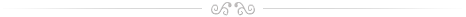

Historie:
Soubor vznikl v r. 1942 v Kyjově pod názvem Slovácký krúžek. Mládež se scházela v hotelu Slavia (František Lukl, Oldřich Stokláska, Josef Sedlář a další). V r. 1945 byl v Nětčicích (část Kyjova) založen Svaz české mládeže a pod jeho hlavičkou pokračovala práce Slováckého krúžku (předseda Josef Sedlář). V r. 1949 podali členové žádost o zřízení samostatného krúžku, který byl povolen a ustanoven. Předsedou byl zvolen L. Fiala, profesor kyjovského gymnázia. V r. 1952 se stává Slovácký krúžek součástí Závodního klubu Skláren Moravia (předseda Josef Fridrich do r. 1961). V roce 1961 začíná pravidelně nacvičovat Mužský sbor pod vedením Jiřího Wenzla.
V tomto období se kromě pořádání tradičních zvykoslovných pořadů v Kyjově začínají uskutečňovat i veřejná vystoupení v jiných městech. Slovácký krúžek doprovází Cimbálová muzika Jury Petrů, a to do r. 1958. V letech 1958 — 1980 spolupracují s krúžkem (později souborem) různé cimbálové muziky — CM PhMr. Augustýna Kúra, Hynka Bíma, Ing. Jana Slaměny (1971 — 1980), Karla Hirsche, Jury Petrů a muzikanti ze Svatobořic soustředěni kolem Josefa Varmuži staršího. Do r. 1969 častým střídáním cimbálových muzik i vedoucích krúžku dochází k určitému útlumu práce a některé akce jsou pořádány doslova ze dne na den.
V r. 1969 dává dohromady mládež z Kyjova Bohumil Frýbort. Ujímá se vedení nácviků, kterým dává pravidelnost. V tomto období krúžek přechází na souborovou práci. V r. 1971 se stává vedoucím nácviku Zdeněk Šimeček a soubor začíná vystupovat po celém Československu, ale také v zahraničí. Od roku 1972 začíná pod vedením Josefa Wenzla působit ženský sbor. V r. 1980 je vedoucím souboru Jan Pavlík, který při nácviku tanců spolupracuje s Janem Loutchanem ze Strážnice a také začíná se souborem opět spolupracovat CM Jury Petrů. V r. 1982 se k vedení nácviků vrací Bohumil Frýbort a stává se rovněž vedoucím souboru. V r. 1986 si narůstající organizační problémy vyžádaly zavedení funkce organizačního vedoucího, které se v té době ujal Zdeněk Langášek. Tím se organizační struktura vedení souboru ustálila a v takovéto podobě pracuje doposud.
V r. 1985 se vedoucím mužského sboru stává Jiří Petrů ml. a jeho přičiněním dochází k častému propojení s rozhlasem a televizí.
Soubor začíná spolupracovat se skupinou žen z Ježova, které obohatily soubor svým přirozeným lidským vystupováním, dokonalou znalostí mnohých i zapomenutých zvyků, obřadů, tanců a písní Severokyjovska a uměním svou živou paměť předvést a předat jiným. Soubor začíná zpracovávat folklor scénicky (např. pořady Fašaňková neděla, Šťastnú cestu — severokyjovská svatba, Asenda). V tomto období dochází i k zavedení konečné podoby názvu — Slovácký soubor Kyjov (1986), a tím ukončení různého pojmenování souboru od původního Slováckého krúžku přes krátkou epizodu názvu Slovácký soubor Josefa Klvani.
V r. 1988 je do funkce uměleckého vedoucího souboru a současně vedoucího nácviku tanců zvolen Milan Pokorák, který navazuje na předešlou práci. Soubor pod jeho vedením dostává pevnější řád a projevují se jeho choreografické schopnosti. V úzké spolupráci s vedoucím CM Jury Petrů —Jiřím Petrů vytváří pro soubor nové zdařilé programy písní a tanců, pro které čerpá podklady výhradně z materiálů Kyjovska.
V r. 1991, pod vlivem nových podmínek pro činnost, soubor zakládá Sdružení přátel Slováckého souboru Kyjov (SPSSK), které se otevírá všem příznivcům folklóru. Slouží jako morální a ekonomická opora souboru a pomáhá přibližovat folklórní dění široké veřejnosti. V r. 1992 se SPSSK přirozenou cestou stává zřizovatelem souboru.
V roce 2014 dochází k transformaci sdružení na spolek z důvodu změn v legislativě. Nově vystupuje pod názvem Slovácký soubor Kyjov, z. s. Rok 2014 je také rokem vzniku další složky, a to Pajtášů.
Jedná se o skupinu primárně bývalých členů taneční složky, kteří i ve vyšším věku chtějí pokračovat v tančení namísto sborového zpěvu, jejím prvním vedoucím je Dušan Janovský.
Historie souboru v heslech...
Název souboru:
- Slovácký soubor Kyjov
Změny názvu:
- Slovácký krúžek (1942 — 1969)
- Slovácký soubor (1969 — 1975)
- Slovácký soubor Josefa Klvani (1976)
- Slovácký soubor (1976 — 1986)
- Slovácký soubor Kyjov (1986 — trvá)
Rok vzniku?
- 1942
Místo působení:
- Kyjov
Zřizovetel:
- Slovácký soubor Kyjov, z. s.
Změny zřizovatele:
- Závodní klub Skláren Moravia (1952 — 1962)
- Sdružený závodní klub Kyjov (1962 — 1974)
- Dům kultury Kyjov (1974 — 1992)
- Sdružení přátel Slováckého souboru Kyjov (1992 — 2014)
- Slovácký soubor Kyjov, z. s. (2014 — dosud)
Vedoucí souboru:
- 1942 — 1949 Josef Sedlář
- 1949 — 1950 prof. Ladislav Fiala
- 1950 — 1952 Engelbert Kreidl
- 1952 — 1961 Josef Fridrich
- 1961 — 1964 Jiří Wenzl
- 1964 — 1973 Josef Sedlář
- 1973 — 1978 Jaroslav Zavrtálek
- 1978 — 1980 Miroslav Kudr
- 1980 — 1982 Jan Pavlík
- 1982 — 1988 Bohumil Frýbort
- 1988 — 2013 Milan Pokorák
Předseda Sdružení přátel Slováckého souboru Kyjov:
- 1991 — 1992 František Lukl
- 1992 — 2008 Zdeněk Langášek
- 2008 — 2014 Alena Melounková
- 2014 — 2020 Dušan Janovský
- od 2020 Milan Macháček
Jednatel, organizační vedoucí:
- 1949 — 1964 Josef Sedlář
- 1973 — 1980 Josef Sedlář
- 1986 — 2003 Zdeněk Langášek
- 2003 — 2007 Pavel Růžička
- 2007 — 2014 Jakub Džubera
- 2014 — 2018 Martin Zrzavý
- od 2018 Jakub Švorba
Vedoucí nácviku tanců:
- 1942 — 1952 Kliment Navrátil
- 1952 — 1953 Jan Selucký
- 1953 — 1957 Jan Selucky & Marie Navrátilová
- 1957 — 1964 Jan Selucký, Rudolf Hochman, Marie Navrátilová
- 1964 — 1967 Jan Selucký, Ivo Šimeček
- 1967 — 1969 Marie Řiháková
- 1969 — 1972 Bohumil Frýbort
- 1972 — 1978 Zdeněk Šimeček
- 1978 — 1980 Miroslav Jestřabík
- 1980 — 1982 Jan Loutchan
- 1982 — 1984 Zdeněk Vavřina
- 1984 — 1988 Bohumil Frýbort
- 1988 — 2013 Milan Pokorák
- 2013 — 2014 Pavel Růžička
- 2014 - 2016 - Monika Mrkvová
- 2016 - 2018 - Petr Michalčík
- 2018 - 2021 - Barbora Šalšová (od roku 2020 spolupráce s Lenkou Letochovou)
- 2021 - dosud - Václav Stix
Vedoucí přípravky
- 1973 — 1978 Bedřich Gazda
- 1982 — 1985 Zdeněk Šimeček
- 1986 — 1988 Milan Pokorák
- 1988 — Renáta Janíčková
- 1989 — 1991 Blanka Pokorná
- 1991 — 1992 Sylva Hudečková
- 1992 — 1999 Ludmila Pokoráková, Pavel Prokeš
- 1999 — 2003 Ludmila Pokoráková, Ladislav Šimeček
- 2003 — 2005 Ludmila Pokoráková, Jindřiška Matějáková, Martin Jelínek
- 2005 — 2006 Ludmila Pokoráková, Pavlína Polášková
- 2006 — 2008 Ludmila Pokoráková, Lenka Pokoráková
- 2008 — 2010 Ludmila Pokoráková, Hana Novosadová, Jakub Polášek
- 2010 — 2013 Ludmila Pokoráková, Hana Novosadová, Petra Lebedová
- 2013 — 2016 Hana Novosadová, Petra Lebedová
- 2016 - 2017 - Zdena Kyněrová, Hana Novosadová
- 2017 - 2018 - Hana Novosadová
- 2018 - 2021 Václav Stix (v roce 2021 Přípravka splynula s taneční složkou)
Vedoucí Mužského sboru:
- 1961 - 1979 - Jiří a Josef Wenzlovi
- 1980 - 1984 - Jiří Petrů st. (roč. 1922)
- 1985 - dosud - Jiří Petrů Ml. (roč. 1953)
Vedoucí ženského sboru:
- 1972 - 1974 - Josef Wenzl
- 1978 - 1985 - Jiří Petrů (roč. 1953)
- 1985 - 1988 - Eva Soldánová
- 1989 - Irena Trutmanová
- 1990 — Jiří Frolec
- 1991 - 1992 - Irena Trutmanová
- 1992 - 2007 - Eva Soldánová
- 2007 - 2008 - Irena Trutmanová
- 2008 - 2009 - Eva Soldánová
- 2010 - 2013 - Irena Trutmanová
- 2014 - 2015 - Lenka Vymazalová
- 2016 - dosud - Eva Soldánová
Významné osobnosti souboru:
- Josef Sedlář (1919 — 2003), MVDr. František Lukl (1918 — 2005),
- Miroslav Kudr (1922 — 1995), Josef Fridrich (1917 — 2010),
- Jiří Petrů st. (1922 — 1984), Ing. Kliment Navrátil (1925 — 2006),
- Marie Navrátilová (1926), Josef Wenzl (1940 — 1986),
- Ing. Bohumil Frýbort (1945), Jiří Petrů ml. (1953).
Otázka výběru „významných osobností“ je velmi citlivá, neboť pro folklor v Kyjově velmi obětavě pracovalo a pracuje mnoho lidí. Uvedený výběr je ovlivněn názory příslušných generací.